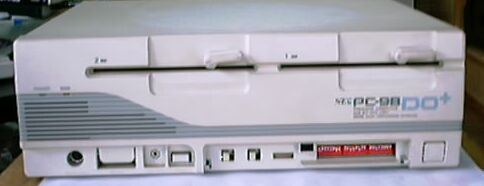

PC98DO+

PC98DO+には、ザイログ社の８ビットMPU-Z80互換、μPD7008AC-8も搭載されており、 PC88時代の８ビットソフトも動き、286相当のV33Aは、386と間違うくらいの性能で、
当時のあらゆるゲームが楽しめたらしい。
386マシン、EPSONの386GE/16MHzと速度を比べてみました。Piを計算する、簡単な プログラムで1000桁の時のデータです。同じクロックの386SXとほとんど変わらないですね。
98DO+ ;134秒
386GE ;124秒
PC-98DO+の主な仕様
型 名 ：PC-98DO+(88モード)
価 格 ：278000
発表日 ：90/10
CPUクロック ：V33A 16MHz (N)μPD70008AC 4/8MHz切り替え
ROM ： (N)N88-BASIC他128KB
標準RAM ： 192KB
最大ユーザーズメモリ ： (N)192KB
グラフィックVRAM容量 ： (N)48KB
グラフィックVRAM画素数： (N)640*400
グラフィックVRAM色数 ： (N)512色中8色1画面(最大モノクロ640*2003画面)
サウンドVRAM ：
テキストVRAM ： 4KB
拡張スロット数 ： 0(使用不可)
標準実装ドライブ FDD ：5インチ1M/640KFDD2-DRIVE
内蔵インタフェースコネクタ：LINEIN端子*2 プリンタI/F アナログCRTI/F
漢字 ：標準:第一、第二、拡張
サウンド機能 ：FM6/SSG3/リズム8/ADCM1
カレンダ時計 ：μPD4900相当年サポートあり
ＶＣＣＩ適合 ：基準レベル0
使用条件 電圧 ：AC100V±10%
周波数：50/60
温度 ：10〜35
湿度 ：20〜80%(結露なし)
消費電力 標準 (W) ：42
最大 (W) ：60
外形寸法 本 体 (mm) (W)：380 (D)：355 (H)：128
キーボード(mm) (W)：435 (D)：180 (H)：34
重量 本体 (Kg) ：9.2
キーボード(Kg) ：1.2
(2002/12/24追記)
変わった98のページに戻る